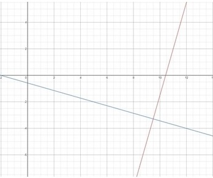

Academic Subjects
➤
Math
➤
Algebra
➤
Linear Equations
➤
Equation Of Line Perpendicular To 2x + 7y + 4
Find the equation of the line that passes through the point (
7
,
-12
) and is perpendicular to the line 2x + 7y + 4
First, let's find the slope of this line by rearranging the provided equation
so it will fit the standard form y = mx + b
2x + 7y + 4 = 0
7y = - 2x - 4
y = -
2
/
7
x -
4
/
7
The slope of this equation is -
2
/
7
The slope of the line perpendicular to this one will be the negative invert, i.e.
7
/
2
Finally, we will plug the provided coordinates (
7
,
-12
) into y = mx + b
-12
=
7
/
2
(
7
) + b
now we solve for b
-12 =
49
/
2
+ b
-12 = 24.5 + b
-24.5 - 12 = b
b = - 36.5
The line perpendicular to 2x + 7y + 4 is
y =
7
/
2
x - 36.5
>h3>equation of a line
